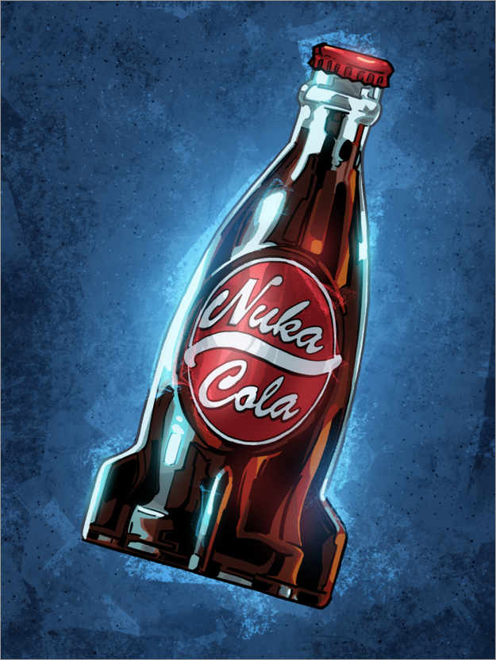

Nuke Cola

Description
No Fallout party is complete without a punch bowl full of Nuka Cola.
It's easy to make this sweet, highly caffeinated beverage.
Just combine cream soda, Coca Cola, and Mountain Dew.
Or mix together soda with blue energy drinks to make Fallout's Quantum version of the drink.
Fans of the game will also be familiar with variations such as Nuka Cola victory, cherry, and dark.
Ingredients
- 16-ounce (473 ml) bottle cream soda
- 16-ounce (473 ml) bottle Coca-Cola
- 1 16-ounce (473 ml) bottle Mountain Dew, Mello Yello, or Sprite
Steps
- Coca-Cola into a punch bowl.
Pour a 16-ounce (473 ml) bottle of Coca-Cola into a punch bowl or serving pitcher.
If you don't have Coca-Cola, substitute any cola flavored soft drink. Use chilled Coca-Cola
to keep the drinks cold.
- Add the Mountain Dew to the bowl. Open a 16-ounce (473 ml) bottle of Mountain Dew,
Mello Yello, or Sprite and pour it into the Coca-Cola in the punch bowl.
Pour slowly to prevent the soda from fizzing up a lot.
- Pour in cream soda and stir the Nuka Cola. Open and pour in a 16-ounce (473 ml) bottle of cream
soda. Take a long spoon and slowly stir the mixture until the liquids are combined.
- Serve the Nuka Cola.
Set out serving glasses so guests can help themselves to this fizzy drink.
If you'd like to put the cola in bottles, use a funnel to pour it into the bottles and serve
them before the Nuka cola loses its carbonation.